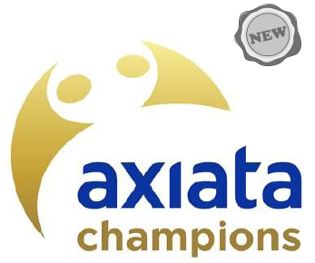

Conducive Workplace
Safety at the Workplace
All our OpCos have occupational health and safety management systems in place. We take reasonable care for the health and safety of everyone at work, including visitors and non-employees who use our premises including our base stations and tower infrastructure.
Each OpCo has a dedicated health and safety committee overseeing the management of its health and safety measures. Floor Wardens are appointed for each floor of a building, to control the emergency procedures for their floor. Safety concerns or issues are directed to them and the contact details of these representatives are clearly displayed on each floor.
In 2014, there were four injuries throughout the Group, translating to an injury rate of 1.1% per more than 15,000 in our total workforce (excluding Idea and MI). There were only 2 lost days as a result of work related injuries during the reporting period.
We continue to develop our health and safety systems, which are progressively benchmarked against international standards.
In Malaysia, Celcom has continued to strengthen its Occupational Health and Safety standards and to ensure an effective safety and health management system. Celcom has regular programmes for employees to raise awareness on health and safety at the workplace and is developing a video on safety for visitors who attend meetings at Celcom. Celcom continues to work towards OSHAS18000 certification6.
6 http://www.ohsas-18001-occupational-health-and-safety.com/
Employee Engagement
Our Employee Engagement Survey (conducted by an independent third party) is the primary method Axiata uses for engaging with its employees. The EES seeks detailed information from employees on a number of different topics affecting them. Key finding of the EES will be shared wtih management and employees in each OpCo. Additional focus group studies are carried out in some instances to further identify the gaps.
For 2015, the EES will focus on ‘strategy, direction and objectives’ as being key drivers of the success of the Group. It will also consider Managerial Effectiveness as a vehicle for driving employee engagement at the ground level. An online planning tool will be introduced in 2015 to facilitate the monitoring of action plans across the group. The Group’s EEI score of 83% for 2014 falls within the range of Global High Performance companies.
Participation in the 2014 Employee Engagement Survey
Grievance and Whistle-Blowing Mechanisms
We promote an open culture and an open-door policy that encourages our people to raise issues to ensure that any behaviour, which excludes or discriminates against an individual or compromises on company values, does not go unchallenged. There is no restriction on the formation of worker groups and labour unions. In Celcom, XL and Smart, where it is mandatory by law for companies to have their own unions, we have an employee union.
Irrespective of the employee union, we always ensure that sufficient opportunity is given to employees to interact and express their concerns through our employee engagement activities. Each operating company has its own grievance procedures and whistle-blowing policy.
Recognising Exceptional Performance:
The Axiata Champions’ Awards
The Axiata Champions’ Awards initiative provides an opportunity for the most exceptional performers within the Group to develop their leadership capabilities. Group’s 13,000 employees have the opportunity to compete every year to make it to the ‘Champions League’. Once selected this, elite group then spends three days working and engaging with Axiata’s senior leadership, learning about different aspects of leadership in a vibrant and stimulating environment.
Champions are selected based on the contribution they make to revenue generation, cost savings, improvement of processes, service and product innovation, and spirit, motivation and level of engagement. They are the exceptional performers who have made strong contributions to the Group throughout the year and were the game-changers in the marketplace or exhibited powerful leaderships skills.